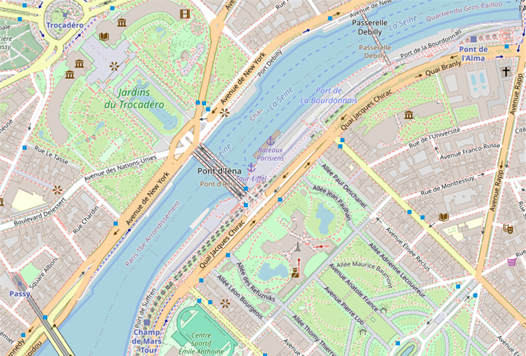
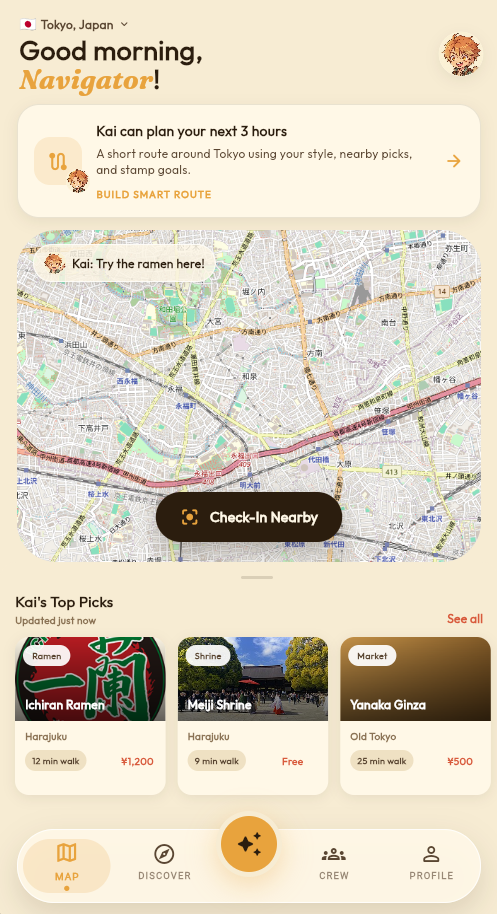
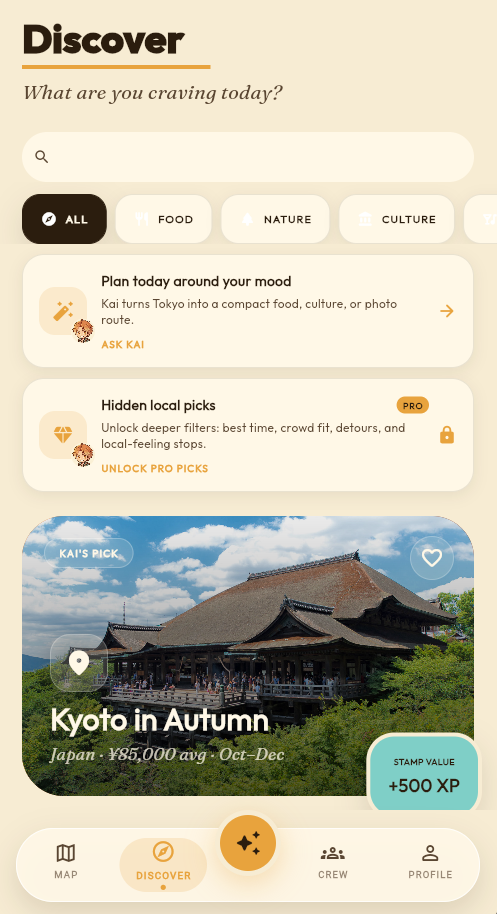
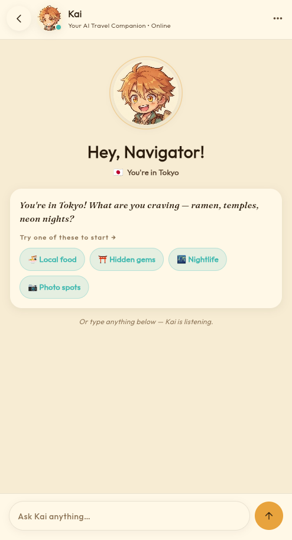
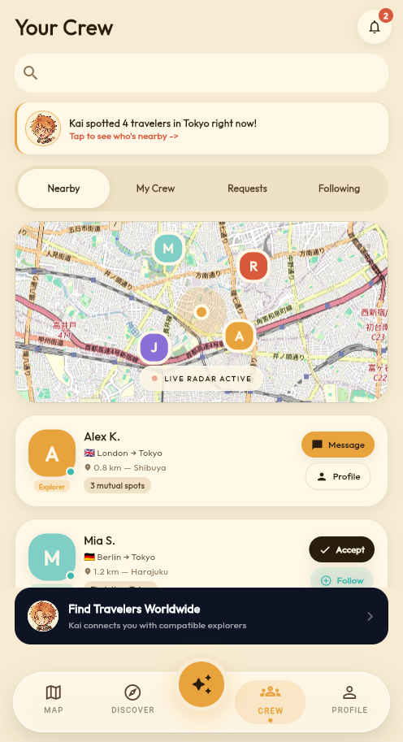
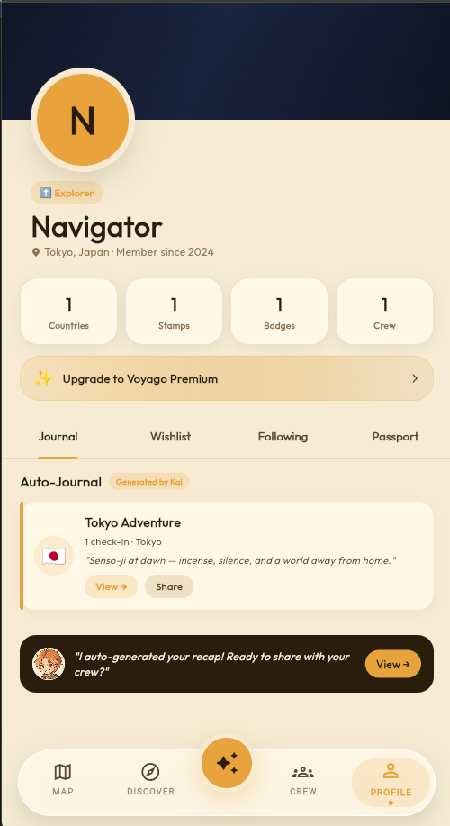

VOYAGO
Digital Passport
Proof your trip happened.
Verified check-ins become stamps, XP, journals, recaps, and a map that grows with every city.
VoyaGo turns local discovery into a clear loop: ask Kai, choose the right place, check in for XP, and watch your digital passport become the proof of every trip.
Verified check-ins become stamps, XP, journals, recaps, and a map that grows with every city.

VoyaGo is built around how travel actually happens — not just the booking, but every moment from landing to the flight home.
VoyaGo loads real map tiles and country-aware places the moment you arrive. No setup needed. Kai surfaces the top picks near you — ranked by your travel style, whether you are a food explorer, culture buff, adventure seeker, or beach hopper.
Talk to the AI travel companion like a local friend who knows every city. Ask for the best ramen in Tokyo, a compact 3-hour itinerary in Paris, which temple to prioritize, or where locals actually eat. Kai responds with real suggestions and place cards you can tap straight into the map.
Arrive at a landmark, restaurant, or neighborhood and tap Check-In. VoyaGo verifies your GPS location and instantly stamps your digital travel passport. Earn XP, climb rank tiers, unlock achievements, and build a verifiable travel record that grows with every destination you visit.
After the journey, Kai auto-generates a cinematic travel recap using your check-ins, saved places, and trip dates. Your digital passport fills with stamps. Share the recap with your crew, export your passport, or use it to plan your next trip. Every journey becomes a story — without writing a word.
VoyaGo combines AI trip planning, real map discovery, GPS check-ins, social traveler discovery, and a digital passport in one cinematic mobile experience.

Real map tiles, country-aware places, nearby picks, and Kai route suggestions help travelers decide what to do now, not just before the trip starts.

Search, categories, trending places, featured cards, and favorite hearts built for quick destination decisions.

Kai helps with local timing, place comparisons, trip questions, and compact itinerary planning.

Nearby traveler discovery is designed around public trust signals, mutual intent, and safe connection patterns.

Digital passport stamps, profile progress, auto-journal cards, and shareable trip recaps keep the app valuable after the journey.
Most travel apps solve one slice: booking, maps, reviews, or memories. VoyaGo connects the moment of deciding, checking in, remembering, and sharing.
Kai turns nearby places into ranked next moves, so travelers are not stuck comparing tabs, reviews, maps, and random lists.
Compare timing, crowds, budget, and alternatives from every place detail so the next action feels useful, not decorative.
GPS check-ins unlock XP, stamps, journal seeds, share cards, and a passport that makes travel feel collectible.
Crew discovery is built around verified check-ins, general-area privacy, public-meet guidance, and report/block controls.
Upgrade for 150 Kai messages per day, smart routes, hidden local picks, passport recaps, exports, and richer traveler discovery tools.
VoyaGo is free to download with real map discovery, GPS check-ins, digital passport stamps, and a daily Kai allowance. Pro unlocks 150 Kai messages per day, heavier AI travel planning, hidden local picks, recaps, passport exports, and crew discovery tools.
Explore the map, collect stamps, save places, and chat with Kai up to the daily free limit.
Monthly and yearly plans are available for frequent travelers. Pro includes 150 Kai messages per day, smart routes, hidden local picks, richer recaps, passport exports, and traveler crew tools.
Download appVoyaGo is not only a utility. It creates a collectible loop around travel behavior: discovery leads to check-ins, check-ins unlock status, status feeds profiles, profiles create social proof, and Kai makes the next action feel personal.
Request the deckSend a support request, investor note, bug report, or partnership question and we'll get back to you.
VoyaGo is an AI travel companion app that combines real maps, AI trip planning, GPS check-ins, digital passport stamps, travel recaps, and traveler crew discovery — all in one app for iOS and Android.
VoyaGo includes Kai, an AI travel companion you can chat with inside the app. Ask for a compact itinerary, the best local food near you, hidden spots the tourist guides miss, or how to split a day between two neighborhoods. Kai responds with real suggestions and place cards you can tap directly into the map.
VoyaGo currently supports 15+ destinations including Japan (Tokyo), France (Paris), Thailand (Bangkok), Brazil (Rio), Egypt, Spain, Greece, Indonesia (Bali), Italy (Rome), Morocco, Mexico, USA, and Vietnam. More destinations are added regularly. Each country has real map content, Kai-curated local picks, and GPS check-in locations.
When you arrive at a landmark, restaurant, or neighborhood, tap Check-In on the place detail screen. VoyaGo verifies your GPS location and instantly stamps your digital travel passport, awards XP, and logs the visit in your auto-journal. No manual entry needed — your travel history builds as you explore.
Explorers who want practical help during trips, people who enjoy collecting memories, social travelers looking for crew, and investors evaluating the future of AI-assisted travel experiences.
VoyaGo is free to download and explore. A premium plan unlocks 150 Kai messages per day, AI trip planning prompts, travel recaps, Crew Finder tools, and passport exports. No credit card required to start.
VoyaGo is available on iOS and Android. Download it from the App Store or Google Play. No web version is required - the full experience lives in the app.
The app includes a subscription model for premium functionality such as 150 Kai messages per day, richer journal exports, Crew Finder tools, and travel recap features.
Yes. VoyaGo only uses your location when you grant permission, and only for in-app features like GPS check-ins and nearby discovery. We do not sell your data. See our Privacy Policy for full details.
Yes. The app is built around real map tiles, country-aware places, GPS-based check-ins, and routed place details with external links where available.